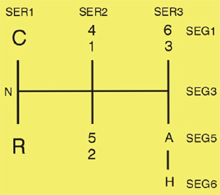

This function is used to check that the lever movements are detected correctly.
Move the gearshift selector to a gear position. Hold the lever in the position and check that the gearshift's position in the diagnostics unit matches the figure below. Example: SEG1 active, SER1 active means that gear C is engaged.

Test conditions:
Parking brake applied.
Battery voltage above 20 V.
Procedure:
Select the function.
A dialogue box shows test conditions.
Move the gearshift lever to a gear position and hold the lever in the position. Compare position with figure.
Repeat step 2 for the other gears.
The function is done.
If the function fails, check the test conditions and repair any faults.